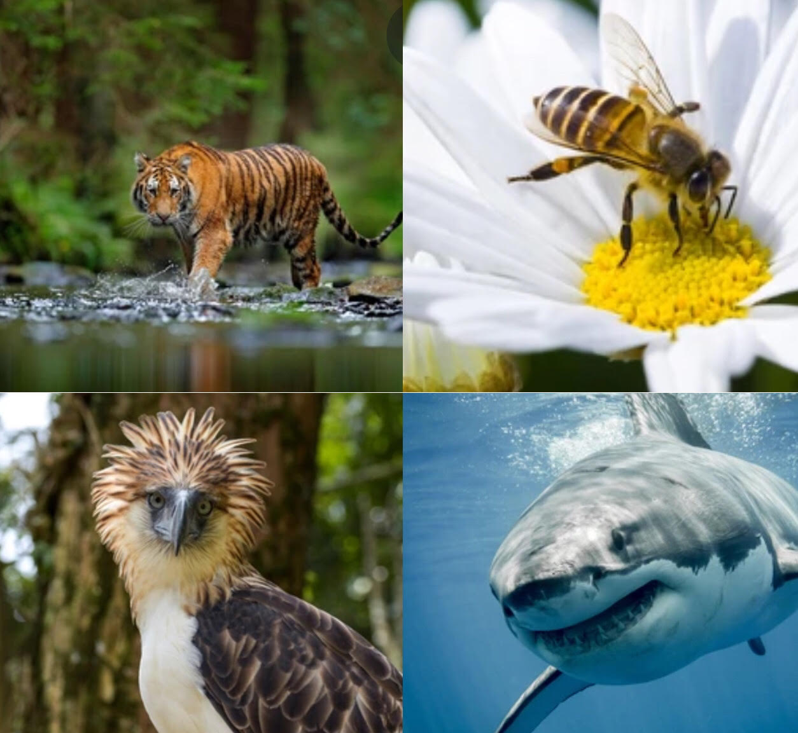

Holocene Heroes

Figure 1: A collage of endangered animals: an Amur tiger, bee, Philippine eagle, and great white shark.
By Carretero, G., Hong, J., Lucaszewicz, M., and Prosicky, O.. (n.d.).
https://www.shutterstock.com/image-photo/great-white-shark-smiling-383911420
https://www.shutterstock.com/image-photo/spring-single-daisy-flower-bee-330159362
https://www.shutterstock.com/image-photo/philippine-eagle-pithecophaga-jefferyi-one-most-1060404536
https://www.shutterstock.com/image-photo/amur-tiger-walking-water-dangerous-animal-694592521
Mass extinctions are events wherein large numbers of organisms go extinct in a relatively short
amount of time. While these extinctions have happened before, species are disappearing from our
planet at rates far exceeding those of ancient times, potentially affecting our lives. This is
where this website comes in.
Holocene Heroes aims to educate people about this ongoing mass
extinction and encourage them to take action even in the simplest of ways.